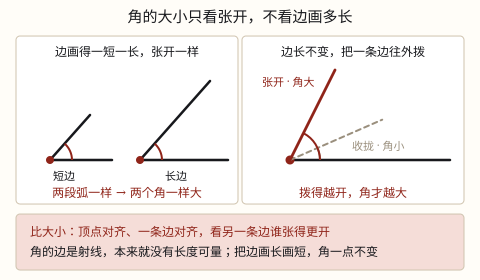
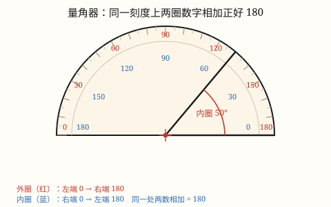

线段、射线、直线与角的认识
线段有两个端点、能量出长度；射线只有一个端点，直线一个也没有，都无限延伸、量不出长度。两点之间线段最短。
| 所属主题 | 图形的认识与测量 |
|---|---|
| 所属模块 | 图形与几何 |
| 课标学段 | 第二学段（3~4年级） |
| 前置知识 | 长度单位：厘米、米、毫米、分米与千米 |
| 核心素养 | 空间观念几何直观量感 |
教材定位
人民教育出版社《2024年版》
对应三上第 5 单元「线和角」：线段、射线、直线与两点间距离。；对应三上第 5 单元「线和角」：角的初步认识、角的比较与角的分类。；对应四上第 2 单元「角的度量」：量角器的用法、角的分类与画角。
课标要求
| 图形与几何·图形的认识与测量 | 结合实例认识线段、射线和直线；体会两点间所有连线中线段最短，知道两点间距离；会用直尺和圆规作一条线段等于已知线段（例26）；了解同一平面内两条直线的位置关系。 印刷第 29 页 行为动词：理解 |
|---|---|
| 图形与几何·图形的认识与测量 | 在图形认识与测量的过程中，增强空间观念和量感。 印刷第 30 页 行为动词：感悟 |
| 图形与几何·图形的认识与测量 | 结合生活情境认识角，知道角的大小关系；会用量角器量角，会用量角器或三角板画角。 印刷第 29 页 行为动词：掌握 |
说明
线段：一根直直的线，两头各有一个端点，比如课本的一条边、拉紧的一段跳绳。因为两头都「到头」了，用尺子能量出它有多长。
射线：只有一个端点，另一头一直伸出去、没有尽头。手电筒射出的光、从一点射出去的激光笔光束，都像射线。它有一头没到头，所以量不出长度。
直线：一个端点也没有，两头都无限延伸。我们在纸上画的那一段只是它的一小截，两头添上箭头表示「还在往前走」，箭头不是端点。直线同样量不出长度。
记住最有用的一句：两点之间，线段最短。在 A、B 两点之间可以连出许多条线，直着连的那条线段最短，它的长度就叫作两点间的距离。
（角的初步认识与大小比较）
从一个点引出两条直直的线，就得到一个角。这个点叫顶点，两条线叫角的边；两条边都是从顶点出发的射线。
角长什么样，看的是两条边张开的大小：张得越开，角越大；收得越拢，角越小。钟面上时针和分针、张开的剪刀、折纸折出的尖角，都是角。
最关键的一句：角的大小与边的长短无关，只与两边张开的大小有关。把两条边画长一点、画短一点，只要张开没变，还是同一个角。
比两个角的大小，把顶点和一条边重合，看另一条边谁张得更开就行；也可以拿折纸折出的直角去比，看比直角小、和直角一样、还是比直角大。
（角的度量与分类）
角有大小，可光说「这个大一点」没法记下来，也没法告诉别人。于是人们约定：把一个周角（转一整圈）平均分成 360 份，其中 1 份所对的角就是 1 度，记作 1°。半圈正好是 180 份，所以量角的工具做成半圆形，弧上从 0 排到 180，这就是量角器。
量一个角只要三步：中心点对准角的顶点，0 刻度线与角的一条边重合，再看另一条边落在哪条刻度线上，那个数就是角的度数。三步里前两步是「摆正」，第三步才是「读数」。
量角器上为什么印着两圈数字？外圈从左端 0 排到右端 180，内圈从右端 0 排到左端 180，同一个刻度位置上两个数加起来正好是 180。这样设计是因为角可以朝左开口，也可以朝右开口：哪一条边压在 0 刻度线上，就顺着那一端的 0 所在的圈去读。从 0 出发的那一圈，才是要读的圈。
按度数给角分类：小于 90° 的叫锐角，等于 90° 的叫直角，大于 90° 而小于 180° 的叫钝角，等于 180° 的叫平角，等于 360° 的叫周角。90° 和 180° 是两条分界线，判断时先跟直角比一比最省事。
量角器只能直接量出 0° 到 180° 的角。遇到更大的角，就量它剩下的一半，再用 360° 去减：比如量出缺口是 150°，那个大角就是 360° - 150° = 210°。
使用场景
跑道与路线：运动会上从起点到终点，沿着直的跑道最省路；绕花坛走就要多跑一截。
折纸和裁剪：折出的折痕、裁下的一条纸边都是线段，两头都到头，能量出几厘米。
光线和探照灯：夜里手电筒、路灯射出的光束，从灯口那一点出发越走越远，像射线。
画图和连线：在地图上把两个地铁站连起来、作业本上连接两个点，连出来的都是线段。
校园里找线：黑板边、桌沿、斑马线是线段；望向远处的铁轨，帮我们想「两头都伸出去」的直线。
（角的初步认识与大小比较）
钟表指针：钟面上时针和分针从中心那一点张开，不同时刻张开得不一样，角也就不一样大。
折纸：把纸对折再打开，折痕和纸边形成的角；把纸裁小一半，角一点也不变。
剪刀和折扇：剪刀张开、折扇打开，张得越开角越大，合拢角就变小。
跑步转弯：跑道上拐弯转得多还是转得少，看的也是转过的那个张开的大小。
校园里的角：课本角、三角尺的角、黑板的角，都是同一个顶点引出两条边。
（角的度量与分类）
滑梯和坡道：滑梯多陡、轮椅坡道多缓，都用坡度与地面的夹角来说，角度越小越平缓。
装修与木工：切踢脚线、拼地板的阴阳角，工人要按 45°、135° 下料，差一两度就合不严。
交通线路：地铁线路图上一段轨道拐了多少度，直接关系到列车要减速到多慢。
太阳与影子：正午太阳高度角大，影子短；傍晚高度角小，影子被拉得很长。
体育与测量：投篮的出手角、仰头看旗杆的仰角、风筝线的仰角，都要用量角器或测角仪读出来。
注意点
端点个数决定能不能量长度。只有线段两头都到头，能量；射线、直线有一头或两头没到头，都量不出——不是尺子不够长，是它们本来就没有全长。
画在纸上的都只是「一截」。射线、直线是无限长的，纸上那段加个箭头只表示「还往这边走」，千万别把箭头当成端点。
只有线段能比长短。射线和直线只能说方向，说「这条直线比那条长」是没有意义的。
「两点之间线段最短」说的是线段，不是直线。直线没有端点，谈不上「两点之间」；这两句话别串在一起背。
线段要直。弯曲的线、折了两下的线都不是线段，能量长度但不参与「哪条最短」的比较。
（角的初步认识与大小比较）
边画长不等于角变大。这是本课最容易错的地方：把两条边延长，张开没变，角就一点没变；角比的是张开的口子，不是边画了多长。
角的两条边必须是直的、从同一个点出发。弯弯的弧线围出的不是角；两条边错开一个点，也不成一个角。
比大小要让顶点和一条边重合。不然看着大，可能只是纸大、位置摆得开，不是角真的大。
别拿「边长」去比角。角没有周长也没有边长可比，能比的只有张开的程度。
角的大小和图形占地方的大小是两回事。同样张开的角，画在小纸上和大纸上一样大。
（角的度量与分类）
中心点要对准顶点，不是对准边。中心点偏一点，两条边读出来的数都会跟着偏。
0 刻度线一定要和一条边重合。没有压住 0 线，读数就得减去起点刻度，多一步就容易错。
内圈外圈只能读一圈。看与 0 线重合的那条边落在哪一端的 0 上，就读那一圈；两圈混着读，60° 会变成 120°。
角的边太短时要先延长。边没伸到刻度弧上，眼睛不知道看哪里，读数全凭猜。
平角不是一条直线，周角不是一条射线。平角有顶点、有两条边，只是两条边正好接成一条直线；把它当成直线，就把「角」这个图形弄丢了。

图 1：左边看出边长不影响角，右边看出张开才改变角

图 1：同一个刻度位置有两排数字，读哪一排要看哪条边压在 0 刻度线上
为什么是这样

图 1：端点个数 2、1、0，决定了能不能量出长度；底部的曲线比直连线长
算理推导
先数端点（看图 1）：线段两头各有一个端点，是 2 个；射线只有一个端点，是 1 个；直线一个端点都没有，是 0 个。三种线的差别，全部落在这个数上。
量长度要拿尺子从一头量到另一头，两头都得有位置。线段两头都有端点，尺子的 0 刻度对准一头、另一头读个数就行；射线和直线总有一头指不到，尺子没处放，所以量不出长度。端点个数不是贴标签，它直接决定「能不能量」。
再看课标那句话：在纸上点 A、B 两点，中间能连出很多条线——直着连的、绕个弯的、折两下的。把每根细线拉直贴到尺子上比一比，绕弯的都要多走一段路，直的那条最短。所以两点之间线段最短，这条最短线段的长度就叫两点间的距离。
这也说清了为什么射线、直线不能叫「距离」：距离得有两个点、两头都定住；射线直线有一头是敞开的，定不住，自然谈不上两点间的距离。
最后把三行摆在一起看：端点 2 → 能量、能比长短；端点 1 或 0 → 只能说方向。线段、射线、直线不是三个要背的名字，是同一个「直直的线」在端点上的三种情况。
（角的初步认识与大小比较）
先把角拆回它的零件：一个顶点，加上从顶点引出的两条射线。上一篇已经说过，射线本来就没有长度——它一头无限延伸，量不出「有多长」。
既然角的边是射线，那「边有多长」这件事对角来说根本不存在。我们在纸上画的那两条边，只是从射线上各截取了一小段给人看：画 3 厘米还是画 8 厘米，只是截得长一点短一点，两条射线的方向一点没动。看图 1 左边：一个角的边短、一个角的边长，可斜边倾斜得一模一样，两段红色小弧一样大，两个角就一样大。
那角的大小到底由什么定？由两条边的方向差，也就是张开的大小。转动其中一条边，方向变了，口子跟着变，角才真的变。看图 1 右边：边长从头到尾没动，把灰虚线那条边往外拨成红实线，口子明显张大了，角立刻变大。
所以更准确地说：角的大小与边的长短无关，只与两边张开的大小有关。边长是「画出来给人看的长度」，张开是「两条边之间的方向差」，只有后者是角本身的属性。这也是为什么比大小时要顶点对齐、一条边对齐，看另一条边谁更往外偏——这时候边长完全不参与比较。
活动角把这件事做成了看得见的动作：两根硬纸条用图钉钉住一头，怎么换长纸条都不改变角，只有把两根纸条拨开或合拢，角才变大变小。拨动的是张开，不是长度。钟面也一样：时针分针的长短从头到尾没变，只是转的位置不同，角就不同。
（角的度量与分类）
先定「一度」有多大。把转一整圈得到的周角平均分成 360 份，其中 1 份就是 1°。这是人为的约定，好处是 360 能被 2、3、4、6、8、9、10 等很多数整除，分出来的角都是整度数，好算也好画。
再定工具的形状。小学里量的角绝大多数不超过 180°，做一个半圆就够用：半圆正好盖住 0° 到 180°，摆在纸上不挡视线，中心点也容易对准顶点。所以量角器是半圆而不是整圆——不是角只能到 180°，是常用角只需要半圈。
刻度为什么从 0 排到 180，而不是从 1 排到 180？因为角的度数是「一条边转到另一条边，扫过了多少份」。还没开始转的时候一份都没扫过，记作 0。0 表示起点，不是「没有角」，所以 0 刻度线必须压在角的一条边上——那条边就是起点。
如果只有一圈数字会怎样？角开口朝右时，右边那条边压在右端的 0 上，顺着往左读很顺；可角开口朝左时，0 在左端，数字却从右往左增大，读完还得算 180° - \text读数，多一步就多一个错的机会。
于是人们在同一个刻度位置上再印一排反向的数字：外圈左端 0、右端 180，内圈左端 180、右端 0。这样不管角朝哪边开口，总有一圈是从压着 0 线的那一端开始数的，可以直接读，不用做减法。同一个位置上外圈加内圈等于 180，正是因为它们是同一段弧从两头各数一次的两种读法。
所以读数的规则只有一句：先找 0 刻度线压在哪条边上，再顺着那个 0 所在的圈读另一条边。看图 1 左边那个角：水平边压在右端 0 上，就读内圈，斜边对着 40；如果错读外圈，就变成 140，那是它的「补角」，不是这个角。
动手实验
在纸上点两个点 A、B，剪几根细线：一根绷直了刚好连住 A、B，另外几根先绕个弯或折一下再连过去。把每根线都取下来拉直、贴到尺子上量——绷直那根最短，绕弯的都更长，这就是「两点之间线段最短」。接着把 A 点当灯口，用笔只往一个方向画出去并画上箭头，你会发现怎么也量不到「头」，这就是射线；再把线的两头都画上箭头，两头都走不到头，就是直线。最后拿尺子老老实实量一下课本的一条边：两头都按得住，才读得出 26 厘米。能量出长度的，只有两头都有端点的那一种。 （角的初步认识与大小比较） 用两根硬纸条和一个图钉做一个活动角：把两根纸条的一头叠起来钉住，钉子就是顶点，两根纸条就是角的边。第一步，把两根纸条都换成长的，但保持张开不动——会发现角一点没变。第二步，把其中一根慢慢往外拨，口子越拨越大，角就跟着变大；再合拢，角又变小。第三步，沿活动角在纸上描下两个角，一个边画得短、一个边画得长，张开保持一样，剪下来把顶点和一条边叠在一起，另一条边正好重合（图 1 左边），两个角一样大。最后拿它对着钟面比：3 点整两根针张开成直角，拨到 2 点整指针收拢，角就小了——指针的长短从头到尾没变过，变的只有张开。 （角的度量与分类） 拿一把量角器量三角尺上的三个角，把结果记下来：90°、60°、30°（或 90°、45°、45°），三个数相加正好 180°。再把量角器原地转半圈，重新量同一个角——读数会从 60° 变成 120°，可角一动都没动。这一次「读错圈」的体验，比背十遍口诀都管用。接着在纸上画一个 75° 的角：先画一条边，把 0 线贴上去，在 75 那条刻度上点一个点，再把点和顶点连起来。最后用量角器量一量课本的四个角，看看是不是都接近 90°。
按场景的例题
例 1（场景：校园生活） 校运会跑步路线
校运会上从起点 A 到终点 B，可以沿直跑道跑，也可以绕过花坛跑。哪条路最短？这个最短的长度叫什么？
解：两点之间线段最短，直着连 A、B 的那条线段最短；它的长度就是 A、B 两点间的距离。
答：直跑道最短，这个长度叫两点间的距离。
例 2（场景：校园生活） 折纸压出折痕
折纸时把一张纸对折压出一条折痕，量得 18 厘米。这条折痕是线段、射线还是直线？为什么？
解：折痕两头都到头、能量出 18 厘米，说明有 2 个端点，是线段；射线和直线都量不出长度。
答：是线段，长 18 厘米。
例 3（场景：上学日常） 用尺子量长度
用尺子量数学书的一条边量得 26 厘米；再量手电筒射出去的那道光柱，能量出长度吗？说说理由。
解：书边两头都有端点，是线段，能量；光柱只有一个端点（灯口）、另一头无限延伸，像射线，量不出长度。
答：书边能量出 26 厘米；光柱量不出长度。
例 4（场景：自然现象） 夜里的光束与画在图上的直线
夜里手电筒射向天空的光，和作业本上两头都画箭头的那条线，各像哪种线？它们能比长短吗？
解：光从灯口出发、一头无限延伸，像射线（1 个端点）；两头都画箭头的线是直线（0 个端点）。两者都无限延伸，不能比长短。
答：分别像射线和直线，都不能比长短。
例 5（场景：计量与估算） 钟表指针看时间
钟面上 2 点整和 4 点整，时针和分针形成的角哪个更大？指针的长短变了吗？
解：把两个时刻的指针画下来叠着比：4 点整两根针张得更开，角更大；时针、分针的长短一直没变，变的是张开的大小。
答：4 点整的角更大；指针长短没变。
例 6（场景：校园生活） 折纸课上的角
折纸时把纸对折再打开，折痕和纸边形成一个角。把这张纸裁小一半，这个角会变小吗？如果把角的两条边都画长 3 倍呢？
解：裁小一半只是把边截短，张开没变，角不变；把边画长 3 倍也只是把两条射线截得更长，张开仍没变，角还是不变。
答：两种做法都不会改变角的大小。
例 7（场景：家庭与年龄） 慢慢打开的折扇
一把折扇慢慢打开，扇面两条边形成的角怎么变？把扇骨换成长一倍的，角会跟着变大吗？
解：扇子越打开，两条边张得越开，角越大；换长扇骨只是把边变长，张开不变，角不变。
答：打开使角变大；扇骨加长不改变角。
例 8（场景：上学日常） 比较作业本上画的两个角
作业本上，甲角画在 8 厘米宽的框里、边画得很长，乙角画在 3 厘米宽的框里、边很短，看起来甲大。怎么比才对？
解：把两个角的顶点和一条边重合，看另一条边谁张得更开；谁画得长、纸多大都不算数。若两条斜边刚好重合，两个角就一样大。
答：顶点对齐、一条边对齐，只比张开的程度。
例 9（场景：校园生活） 公园滑梯的坡度
滑梯的斜面和地面交于一点。把量角器中心对准这个点，0 刻度线贴住地面那条边，斜边指在外圈 140、内圈 40 的位置。滑梯与地面的夹角是多少度？是什么角？
解：0 刻度线压在右边，读内圈，是 40°。40° < 90°，是锐角。若错读外圈 140，就变成钝角了，可滑梯明明是缓坡。
答：夹角 40°，是锐角。
例 10（场景：校园生活） 用两块三角尺拼角
用一块 30° 的三角尺和一块 45° 的三角尺，把两个角顶点对齐、一条边重合拼在一起，拼出的角是多少度？是什么角？
解：两块三角尺的角挨着放，张开的范围接起来：30° + 45° = 75°。75° < 90°，还是锐角。
答：75°，锐角。
例 11（场景：行程出行） 地铁线路图上的弯道
地铁线路图上，一段轨道拐弯后与原来方向形成的夹角是 150°。列车实际转弯转了多少度？
解：直行时前后方向成 180° 平角，拐弯后只剩 150°，少掉的部分就是转过的角度：180° - 150° = 30°。转角越小，说明线路拐得越急。
答：列车转了 30°。
例 12（场景：自然现象） 正午和傍晚的太阳高度
夏天正午测得太阳高度角是 70°，傍晚测得是 15°。这两个角各是什么角？哪个时刻影子更长？
解：70° 小于 90°，是锐角；15° 也是锐角。太阳高度角越小，光线越斜，影子拉得越长，所以傍晚影子更长。
答：两个都是锐角；傍晚影子更长。
常用推论
线段能量出长度，量出的数按 1 m = 10 dm = 100 cm = 1000 mm 换算：几米几厘米先化成同一单位再比大小。
封闭图形一周的长度，就是几条线段接起来的总和：长方形周长 C = 2(a + b)、正方形周长 C = 4a。
反过来由周长求边长：a = C ÷ 2 - b（长方形）、a = C ÷ 4（正方形）——求出来的仍是线段的长度。
两点之间线段最短，所以这条线段的长度就是两点间的距离；绕弯的路线一定比它长。
钟面上分针走 1 时 = 60 分 转一整圈、1 分 = 60 秒；指针从 12 走到 3 张开成直角，张开的多少决定角的大小。
等边三角形 C = 3a 三条边一样长、三个角也一样大；正方形 C = 4a 四个角都是直角——边相等时角也相等，但每个角多大仍由两条边张开决定。
角的大小与边的长短无关，只与两边张开的大小有关；把两条边同时延长或缩短，角不变。
比角的大小用重叠法：顶点重合、一条边重合，另一条边张得更开的那个角更大。
1 个平角 = 2 个直角，1 个周角 = 2 个平角 = 4 个直角，即 180° = 2 × 90°，360° = 4 × 90°。
量角器上同一个刻度位置有两个读数，外圈数与内圈数的和是 180°；读出其中一个，另一个就是它的补角。
用一副三角尺（30°、60°、45°、90°）拼角或叠角，能得到的最小单位是 15°，所以拼出的角都是 15° 的倍数。
判断一个角是什么角，先和直角比：比直角小是锐角，等于直角是直角，比直角大又不到平角是钝角。
易错点
错说「直线比射线长，射线比线段长」。
为什么错射线和直线都无限延伸，根本没有全长，谈不上谁长谁短；能比长短的只有两头都到头的线段。
正确线段能量长度、能比长短；射线和直线只谈方向，不谈长短。
错把纸上画的那段带箭头的线，当成「射线只有这么长」，还拿尺子量出 8 厘米。
为什么错纸太短，画不下无限长；箭头只是说「还往这边走」，不是端点。量到的 8 厘米是画在纸上的那一截，不是射线。
正确射线有 1 个端点、另一头无限延伸；纸上这段只是它的一小截，量不出全长。
错背成「两点之间直线最短」。
为什么错直线没有端点、两头都无限延伸，谈不上「两点之间」。课标原话说的是两点之间的线段最短。
正确两点之间线段最短，这段线段的长度叫两点间的距离。
错把角的两条边都延长一倍，就说「角变大了」。
为什么错这是本课最大的坑。角的大小与边的长短无关，只与两边张开的大小有关。角的两条边本来就是从顶点出发的射线，没有尽头；画长画短只是截取的长短变了，两条边的方向、张开的大小一点没动——把边接长，等于只把射线上画出来的那一截加长，角还是原来那个角。
正确边延长后仍是同一个角；只有把两条边拨得更开，角才变大。看图 1 左边：一短一长的两个角，弧一样大，角就一样大。
错看到甲的边画得比乙长，就判定甲角比乙角大。
为什么错拿「边的长短」当成了比角的标准。边长是线段才有的事，角的两条边是射线、根本没有长度可量；能比的只有两条边张开的程度，这是两码事。画在大纸上的小角，和画在小纸上的大角，谁大得看张开，不能看纸。
正确把两个角的顶点和一条边重合，另一条边谁张得更开，谁的角才大；与边画多长完全无关。
错认为「剪刀刀刃越长，张开的角越大」。
为什么错刀刃长只说明边（截取的那一段）长，不说明张开多少；剪刀合拢时刀刃再长，角也很小。把长度和张开混为一谈了。
正确只看两片刀刃张开的大小；张开不变，换更长的刀刃也不改变角。
错量一个开口朝右的角，斜边落在内圈 60、外圈 120 的位置上，张口就答「这个角是 120°」。
为什么错读错了圈。0 刻度线压在右边，读数要从右端的 0 出发，也就是读内圈；外圈那排是从左端 0 开始的，它的 120 说的是「从左边量过来的 120°」，正好是这个角的补角。角看着不到直角，报出 120° 本身就不合理。
正确先看 0 线压在哪一端，再读那一圈的 0 所在的那排数，答案是 60°。养成习惯：读完先瞄一眼图形，锐角不可能读出大于 90° 的数。
错量角时把量角器的中心点对准角的一条边，或者干脆把直边贴在角的边上就读数。
为什么错量角器量的不是边的长度，是两条边从顶点张开的范围。顶点是所有刻度的圆心，中心点偏了，整个半圆的圆心就偏了，两条边读出来的数会同时偏大或偏小。
正确中心点的十字对准顶点，0 刻度线压住一条边，量角器的直边与那条边平行贴合，再读另一条边。
错说「平角就是一条直线」「周角就是一条射线」。
为什么错平角有顶点、有两条边，只是两条边正好朝着相反方向接成一条直线；周角的两条边重合在一起，但它转过了一整圈。把图形和「角」混为一谈，就丢了顶点和两条边，也丢了「转过的度数」这个关键。
正确平角是两条边成一条直线的角，度数是 180°；周角是两条边重合、转过一整圈的角，度数是 360°。
直观理解
把三种线想成三种绳子：线段是两头都打了个结的跳绳，拎起来量一量就知道多长；射线是「一头拴在灯上、另一头放出去收不回来」的风筝线，你永远量不到它到底有多长；直线是两头都在放、谁也没拴住的绳，连一头都抓不住。要量长度，得两头都能抓在手里——所以只有线段量得出。而两个绳结之间，把绳子绷直最省绳，绕个圈就得多用一截，这就是「两点之间线段最短」。下次看到箭头，先想想它是「还在走」而不是「到这儿为止」。 （角的初步认识与大小比较） 把角想成一把正在打开的折扇：扇骨从扇钉那一点伸出去，扇子打开多少，角就多大。你把扇骨接长一截，扇面看着大了，可「打开的角度」一点没变——那只是扇骨更长，不是张得更开。真正让角变的是把扇骨往外掰：掰得越开，角越大。所以钟面上两根针从不改变长度，只在转动里改变角；剪刀刀口再长，合着的时候角也小。记住一句话：量扇子张开多少，别量扇骨有多长。 （角的度量与分类） 把量角器想成一把只有半圈的扇子，中心那颗钉子就是角的顶点。扇子的骨架从 0 编到 180，左边一半和右边一半各编了一套号，因为扇子可以从左边打开，也可以从右边打开。角的一条边压在 0 号骨架上，另一条边停在哪根骨架上，就报哪根骨架的号——从 0 数过去才作数，从 180 倒着数的那套只是备用的。
线段两点能丈量，射线一头放出去；直线两头都不收，两点之间线段短。 （角的初步认识与大小比较） 角大小，看张开，边画长短都不改；顶点一边先重合，谁偏得远谁更大。 （角的度量与分类） 量角器，半圆尺，中心对准角顶点；零线贴边认零圈，另边指几就是几。